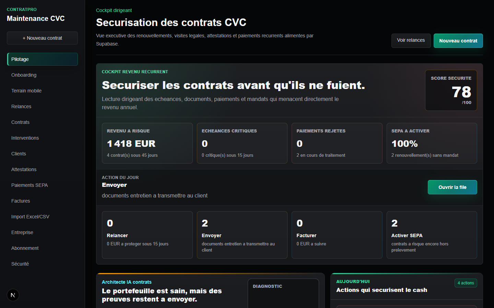
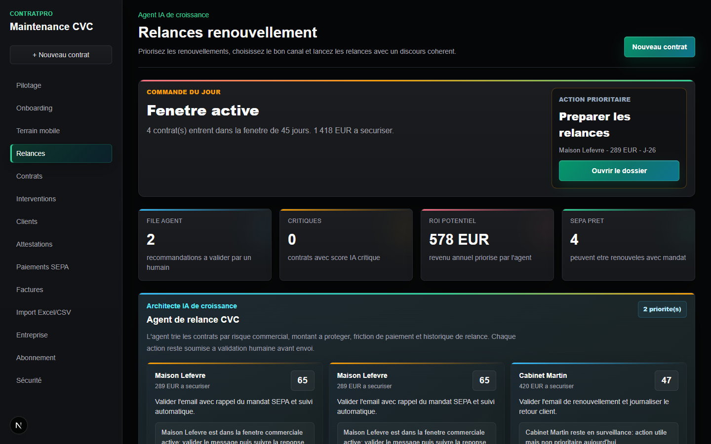
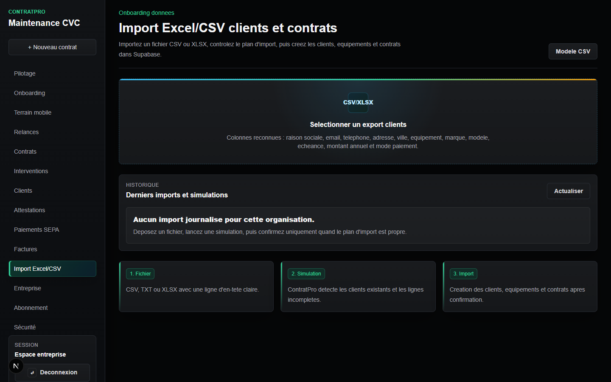
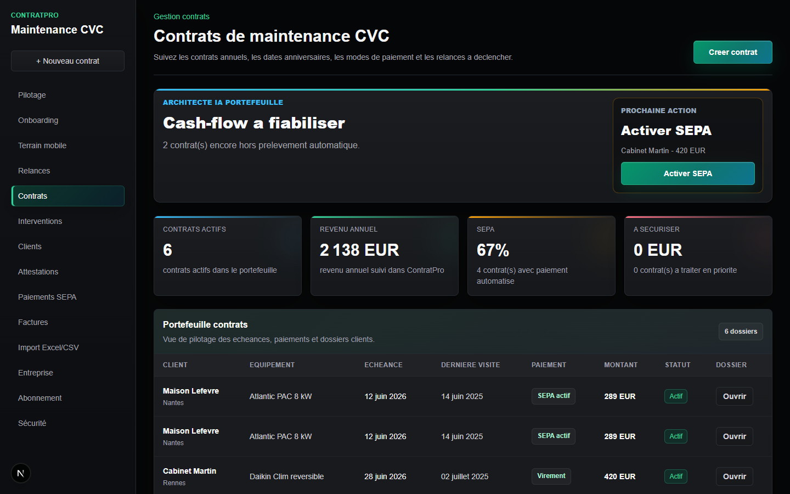
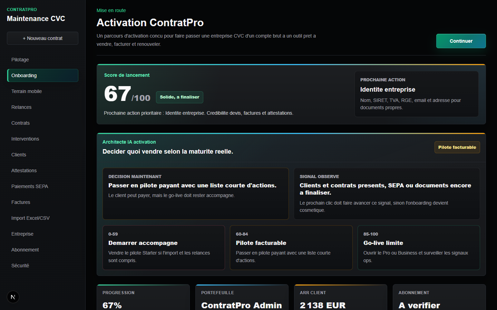
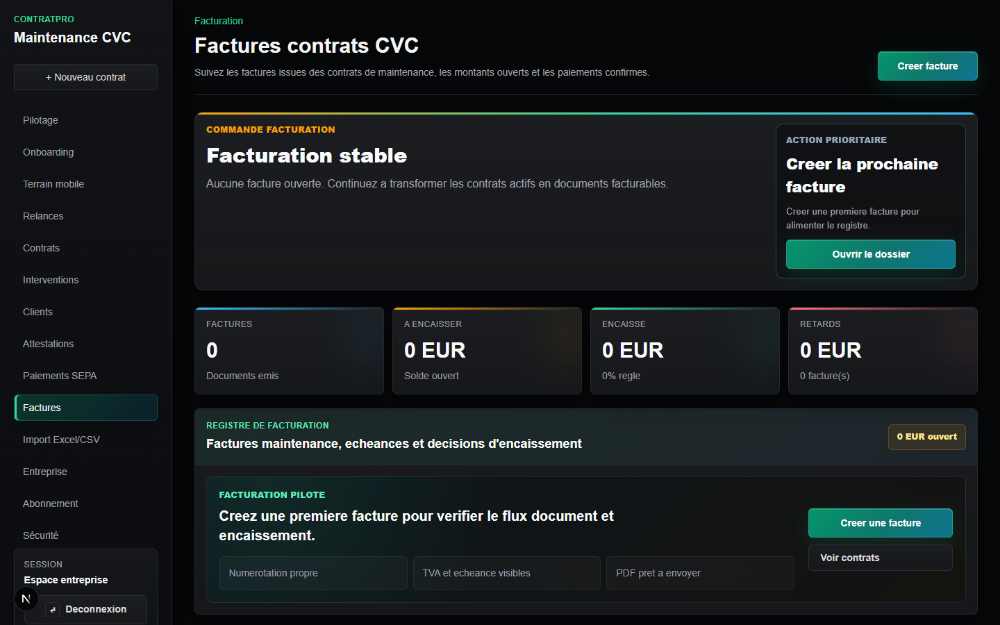
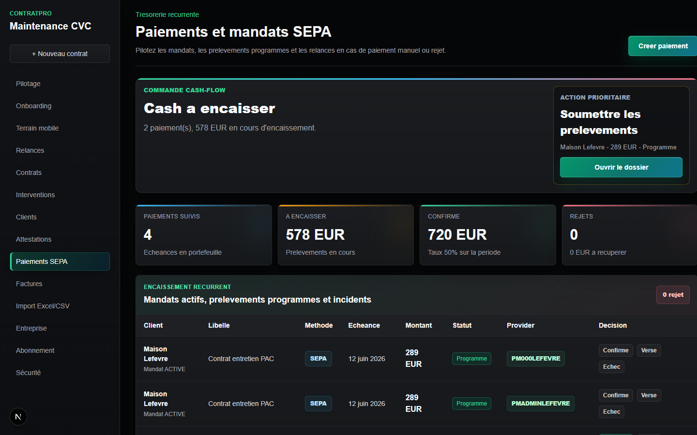

ContratPro SaaS CVC
Un cockpit dirigeant pour transformer Excel, les echeances et les relances en revenu recurrent visible.

Architecte IA de croissance
L'agent priorise le contrat a proteger, propose le message et garde la validation humaine.

Import accompagne
Simulation CSV/XLSX, doublons visibles, contrats prepares: le pilote demarre sans bricolage.


Activation premium
L'onboarding transforme le flou en jalons: entreprise, clients, contrats, documents, SEPA et securite.

Factures et cash-flow
Factures, historiques, paiements SEPA et rejets restent visibles dans le meme cycle de revenu recurrent.


Demo pilote chauffagiste
ContratPro ne promet pas un logiciel de plus. Il montre quels contrats securiser maintenant.
ContratPro
Pour les chauffagistes qui veulent arreter de laisser les renouvellements dormir dans Excel.